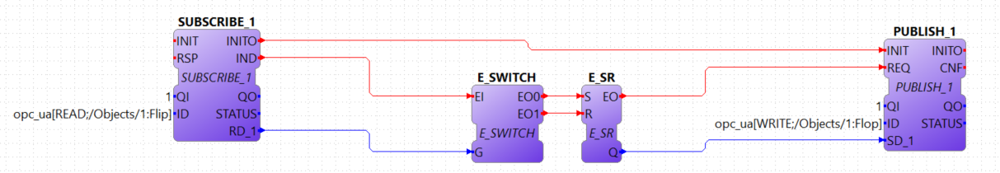

$ mkdir ~/4diac && cd "$_" $ git clone -b develop https://github.com/eclipse-4diac/4diac-forte.git.git forte $ cd forte && mkdir build
OPC UA With IEC 61499 Tutorial
This tutorial shows how you can use OPC UA in an IEC 61499 Application using available FBs. You should first complete the First Steps in Eclipse 4diac Tutorial to get familiar with the 4diac IDE. 4diac FORTE uses the open62541 OPC UA stack which is open source and can also be used in commercial projects free of charge.
After version 1.11.0 of 4diac FORTE, the OPC UA module has changed its API, so applications developed before this version won’t be compatible. The changes give more stability to 4diac FORTE and also brings new features. The OPC UA module can be used with v1.0 of open62541.
Tasks in this tutorial:
Build 4diac FORTE with open62541
OPC UA is not enabled by default in 4diac FORTE. To enable it, you need to build 4diac FORTE with the open62541 source code yourself.
|
Important
|
You need python installed on your computer in order to compile the OPCUA library. |
Linux
-
Download the 4diac FORTE source from https://github.com/eclipse-4diac/4diac-forte:
-
Download the source for open62541 from https://github.com/open62541/open62541:
$ cd ~/4diac $ git clone https://github.com/open62541/open62541.git --branch=v1.0 open62541
-
Build open62541. If you are running the code on production devices we suggest setting the build type to
Release.$ cd ~/4diac/open62541 && mkdir build && cd $_ $ cmake -DBUILD_SHARED_LIBS=ON -DCMAKE_BUILD_TYPE=Debug -DUA_ENABLE_AMALGAMATION=ON .. $ make -j
-
Set 4diac FORTE to include open62541. If you are running the code on production devices we suggest setting the build type to
Release.$ cd ~/4diac/forte/build $ cmake -DCMAKE_BUILD_TYPE=Debug \ -DFORTE_ARCHITECTURE=Posix \ -DFORTE_MODULE_CONVERT=ON \ -DFORTE_COM_ETH=ON \ -DFORTE_MODULE_IEC61131=ON \ -DFORTE_COM_OPC_UA=ON \ -DFORTE_COM_OPC_UA_INCLUDE_DIR=$HOME/4diac/open62541/build \ -DFORTE_COM_OPC_UA_LIB_DIR=$HOME/4diac/open62541/build/bin \ -DFORTE_COM_OPC_UA_LIB=libopen62541.so $ make -j
Windows with Visual Studio
-
Use a Git tool under Windows and download the 4diac FORTE source from https://github.com/eclipse-4diac/4diac-forte and use the develop branch. The following steps show the commands for Git Bash.
$ mkdir "$HOME/4diac" && cd "$HOME/4diac" $ git clone https://github.com/open62541/open62541.git --branch=v1.0 open62541 $ mkdir build && cd "build"
-
Use CMake to generate all the build files. Download and install: https://cmake.org/download/
-
Open the
$HOME/4diac/fortefolder in CMake, and set the output for the build binaries to theforte/buildfolder. -
Press and select your Visual Studio Version. (Make sure you select your installed VS version. Otherwise CMake does not find the C/C++ compiler. Activate Use default native compilers
-
Set
FORTE_ARCHITECTUREtoWin32,FORTE_MODULE_CONVERT=ON,FORTE_MODULE_IEC61131=ON, and press two times on configure. All red entries should now be gone. -
Build open62541. If you are running the code on production devices we suggest setting the build type to
Release. Open a new CMake window and open the$HOME/4diac/open62541folder as source code directory,$HOME/4diac/open62541/buildas the binaries directory. -
Press and select your Visual Studio Version. (Make sure you select your installed VS version. Otherwise CMake does not find the C/C++ compiler. Activate Use default native compilers
-
Activate
BUILD_SHARED_LIBSandUA_ENABLE_AMALGAMATION -
Press , then and then
-
Go to . You may need to execute the command multiple times until all projects are build successfully. This will create the open62541 library under
$HOME/4diac/open62541/build/bin/Releaseand the amalgamated header fileopen62541.hin$HOME/4diac/open62541/build/ -
Switch to the 4diac FORTE CMake window to include open62541:
FORTE_COM_OPC_UA=ON FORTE_COM_OPC_UA_INCLUDE_DIR=C:\Users\USER\4diac\open62541\build FORTE_COM_OPC_UA_LIB_DIR=C:\Users\USER\4diac\open62541\build\bin\Release
-
Press and make sure that
FORTE_COM_OPC_UA_LIBis set toopen62541.dll -
Press , then and then
-
Go to . You may need to execute the command multiple times until all projects are built successfully. This will create
$HOME/4diac/forte/build/Debug/forte.exe -
In the 4diac FORTE VS Project, Set the PATH variable to include the path to the
open62541.dll. Go to properties of forte, Configuration Properties | Debugging | Environment and addPATH=C:\Users\USER\4diac\open62541\build\bin\Release;%PATH%(Set the correct user path!)
General overview of how to use the module
The parameters for the communication FBs (ID data input) is divided in two (three for remote actions) parts, separated by a semicolon ';'
opc_ua[ACTION;ENDPOINT;PAIR1;PAIR2;...]
-
ACTION: Mandatory field and can have the following values (all in upper case):
-
READ
-
WRITE
-
CREATE_METHOD
-
CALL_METHOD
-
SUBSCRIBE
-
CREATE_OBJECT
-
DELETE_OBJECT
-
CREATE_VARIABLE
-
DELETE_VARIABLE
-
-
ENDPOINT: Mandatory and restricted part when using for remote actions. It must end with a
character.
Example:opc.tcp://192.168.0.100:4840 -
PAIR: In the format BROWSENAME,NODE_ID (separated by a comma ','). When possible, NODE_ID can be omited, in which case the comma ',' must also be omitted. If the BROWSENAME is to be omited (when possible) the ',' must be present.
-
BROWSENAME: Browsepath to the node and must always start with a slash '/'. A colon before the name allows defining the namespace of the browsename of the current element. The default namespace of browsename is 1, except for the first part which defaults to zero. This is because in most cases the first part to access is in namespace 0. If you want to create something directly under /Root, you should then specify your namespace, for example /1:directUnderRoot. This is valid for local and remote access.
Example:/Objects/myFolder/myNode
Example:/Objects/2:myFolder/myNode→ In objects, it will look for a folder with name myFolder and namespace 2 and inside, the node with name myNode and namespace 1 -
NODE_ID: In the format
NAMESPACE_INDEX:IDENTIFIER_TYPE=IDENTIFIER-
NAMESPACE_INDEX: Number of the namepsace. If ignored, it defaults to 0. When ignored, the ':' must also be omitted
-
IDENTIFIER_TYPE: Can have the following values:
-
i: The nodeId is numeric
-
s: the nodeId is a string
-
b: the nodeId is a bytestring
-
g: the nodeId is GUID (NOT IMPLEMENTED)
-
-
IDENTIFIER: identifier according to the IDENTIFIER_TYPE
-
1:i=12345 → namespace 1, numeric identifier 12345
-
3:s=hello → namespace 3, string identifier "hello"
-
2:b=hello2 → namespace 2, bytestring identifier hello2
-
s=hello5 → namespace 0, string identifier "hello5"
-
-
-
PAIR Examples:
-
/Objects/myFolder/myNode,1:i=12345 → Both browsepath and nodeId are provided
-
/Objects/myFolder/myNode1 → browsepath is provided, the nodeId is omitted
-
,1:i=12345 → browsepath is omitted, but nodeId is provided
NoteTo decide if a node exists, the following rules apply:
-
If only the browsepath is present, a node exists if there’s a node in that browsepath
-
If both browsepath and nodeId are given, a node exist if an existing node in the browsepath has the same nodeId as the provided one
-
If only nodeId is given, a node with the provided nodeId must exist in the address space
-
When creating a node (only locally) browsepath should be present.
-
-
-
ID Examples:
-
opc_ua[READ;/Objects/test1]→ read the local node /Objects/test1. Create the node if it doesn’t exist with a random nodeId -
opc_ua[READ;/Objects/test1,i=1]→ read the local node /Objects/test1. Create the node if it doesn’t exits with a numeric node id 1 and namespace 0. If the node already exist and it has other nodeId, it will fail. -
opc_ua[WRITE;/Objects/test1;/Objects/test1]→ Write nodes /Objects/test1 and /Objects/test1 from values in SD_1 and SD_2. Will create the nodes if they don’t exist with random nodeIds. If they exist, it will write to them when triggered. -
opc_ua[WRITE;opc.tcp://192.168.0.100:4840#;/Objects/test1;/Objects/test1]→ Write nodes /Objects/test1 and /Objects/test1 on remote from values in SD_1 and SD_2. If nodes aren’t found, 4diac FORTE will look for them after some seconds until it finds them. Remote creation is not supported
|
Note
|
Depending on the action being performed, browsepath and/or nodeId are mandatory/optional. See the table below. |
| Remote/Local | Desired Action | Function Block to use | Restrictions |
|---|---|---|---|
Local |
READ |
SUBSCRIBE |
Number of Pairs should match the number of RDs. NodeId is optional. If browsename is omitted, it will look for the node using the nodeId and won’t create any (because it doesn’t know where to create it) |
Local |
WRITE |
PUBLISH |
Number of Pairs should match the number of SDs .NodeId is optional. If browsename is omitted, it will look for the node using the nodeId and won’t create any (because it doesn’t know where to create it) |
Local |
CREATE_METHOD |
SERVER |
Number of Pairs should be 1. Browsepath MUST be provided. NodeId is optional |
Local |
CALL_METHOD |
X |
Not allowed to call local methods |
Local |
SUBSCRIBE |
X |
Not allowed to subscribe to local variables |
Local |
CREATE_OBJECT |
PUBLISH_0 |
Number of Pairs should be 2. The first one is for the type (Browsename and/or NodeId must be provided. If both are provided they should match). The second one is for the instance to create (Browsepath MUST be provided. NodeId is optional) |
Local |
DELETE_OBJECT |
PUBLISH_0 |
Number of Pairs should be 1. Browsepath MUST be provided. NodeId is optional |
Local |
CREATE_VARIABLE |
PUBLISH_0 |
Number of Pairs should be 3. The first one is for the variable type (Browsename and/or NodeId must be provided. If both are provided they should match). The second one is for data value type of the created variable (Browsename and/or NodeId must be provided. If both are provided they should match). The third one is the path of instance to create (Browsepath MUST be provided. NodeId is optional) |
Local |
DELETE_VARIABLE |
PUBLISH_0 |
Number of Pairs should be 1. Browsepath MUST be provided. NodeId is optional |
Remote |
READ |
CLIENT |
Number of Pairs should match the number of RDs and no SDs must be present. Browsename and/or NodeId must be provided. If both are provided they should match |
Remote |
WRITE |
CLIENT |
Number of Pairs should match the number of SDs and no RDs must be present. Browsename and/or NodeId must be provided. If both are provided they should match |
Remote |
CREATE_METHOD |
CLIENT |
Not allowed to create methods remotely |
Remote |
CALL_METHOD |
CLIENT |
Number of Pairs should be 1. Browsepath MUST be provided. NodeId is optional. If both are provided they should match |
Remote |
SUBSCRIBE |
SUBSCRIBE |
Number of Pairs should match the number of RDs. Browsename and/or NodeId must be provided. If both are provided they should match |
Remote |
CREATE_OBJECT |
X |
Not allowed to create objects remotely |
Remote |
DELETE_OBJECT |
X |
Not allowed to delete objects remotely |
Remote |
CREATE_VARIABLE |
X |
Not allowed to create variables remotely |
Remote |
DELETE_OBJECT |
X |
Not allowed to delete variables remotely |
OPC UA variables
Flip-Flop Application using Variables
In this step you will create a simple Flip-Flop Application, which uses PUBLISH and SUBSCRIBE function blocks to create Variables in the address space of the OPC UA Server. Clients can then read from those variables or write new values.
Follow the steps in the Blinking Tutorial to create a new System, Application, and Device. When you have created the empty Application, continue with the following steps.
In the following steps we create a Flip-Flop application where a boolean value is read from an OPC UA Variable and then its negated value published as another variable. To achieve this, we make use of SUBSCRIBE and PUBLISH function blocks. The SUBSCRIBE function block is used for subscribing to one or multiple OPC UA Variables, i.e., the value of the variable will be available in the Application. The PUBLISH function block is used to publish a value from within the Application so that it can be read by clients.
When the INIT event of those function blocks is triggered, the OPC UA server is initialized and started on the default endpoint URL: opc.tcp://localhost:4840.
Note that only one OPC UA server will be created and the address model is shared between all the function blocks.
-
Drag the following function blocks from the Type Library into the Application Editor:
-
events/E_SWITCH
-
events/E_SR
-
net/SUBSCRIBE_1
-
net/PUBLISH_1
-
-
Connect the function blocks in the following way:

-
Map the function blocks to the device
-
To configure where the variable nodes are created in the address space, you have use the ID fields of the SUBSCRIBE/PUBLISH function blocks. We want to create the variables under
/Objects/, whereas the nodesFlipandFlopshould be created in namespace 1. Therefore we set the IDs toopc_ua[READ;/Objects/1:Flip]andopc_ua[WRITE;/Objects/1:Flop]. If you don’t indicate the namespace explicitly (the1:), then it will take the namespace1as default. QI has to be set to 1 to enable the function block. -
Open the System Editor and connect the COLD and WARM ports to the INIT port of SUBSCRIBE_1. So finally it should look like this:

-
Deploy the Application to 4diac FORTE
-
Open UaExpert (you can get it from here) and connect to the OPC UA server running on 4diac FORTE:
opc.tcp://localhost:4840. You should see the two variables which have been created by the SUBSCRIBE and PUBLISH function blocks:The two VariableNodes
FlipandFlopare created out of the SUBSCRIBE and PUBLISH function block. The data type of the variables is derived from the type of the connected FB’s port datatype (E_SWITCH.G and E_SR.Q) -
Optionally you can now monitor the Application in 4diac FORTE, e.g., watch the values of SUBSCRIBE and PUBLISH FB. See Use Eclipse 4diac locally Tutorial - Monitor on how to do that.
-
In UaExpert drag the two variables
FlipandFlopinto the Data Access View. Here you can now change the value ofFlip. This will cause the IND port of SUBSCRIBE to fire an event and 4diac FORTE will read the new variable value, negate it and setQto the negated value. The REQ event of the PUBLISH FB has to be triggered to set the new value from SD_1 in the address model of OPC UA (Flopvariable). Note that in the beginning both values will befalsesince no event has been triggered yet. -
In 4diac FORTE check the monitored application to see what happens there if you change a variable.
Adder Application using Variables
Here you can see another example how to use SUBSCRIBE and PUBLISH to create an IEC 61499 application which adds two values, by reading the values from an OPC UA variable and providing the result.
If you followed the steps before you should be able to create a new Application which looks like this:
The F_ADD function block is a generic type which can have any supported data type for the IN1, IN2 and OUT ports. On the other hand the SUBSCRIBE and PUBLISH FBs need to now which datatype the created variables should have. To introduce this information into the application model, you can use the INT2INT converter function block. This will create the following nodes in the OPC UA Server:
Try to understand from where the names for Num1, Num2, and Result come from.
You can then drag the variables into UaExpert’s Data Access View and change the values of Num1 and Num2. The value of Result should then be the sum of those two values.
Read and Write OPC UA variables on a remote server
This example shows you how you can use a CLIENT function block to write and read an OPC UA variable on a remote server.
Create a new System which includes two devices:
One for the remote server and one for the local variable read/write.
By running two 4diac FORTE instances on your local PC, it is possible to simulate the use-case where the server and client are in separate 4diac FORTE instances.
The server could for example run on a device offering the variables, the client is then another device which requests information
of the previous one.
To start two 4diac FORTE instances on the same PC, you can pass the port on the command line, e.g., ./forte -c localhost:61500
The system configuration should then look like this:

Then we create the following application. On the server side we create an OPC UA variable /Objects/Increment (SUBSCRIBE_1).
When a client writes to this variable, it will be incremented (F_ADD) and then written to another OPC UA variable at /Objects/Incremented (PUBLISH_1).
On the client side we create a CLIENT_1_0 FB which should write a number to the variable on the remote server.
To read the incremented value from the server, we use a CLIENT_0_1 FB, which reads the variable’s value as soon as the REQ event is triggered.
Do not forget to connect the COLD/WARM events in the resource view to the INIT event ports of the corresponding function blocks.
Deploy the application to two 4diac FORTE instances. You can access the server variables using UaExpert. For the client, you can monitor the system. When you trigger the InputValue.REQ event, the client will write the number 42, and will then read the Incremented value where the new value will be present. The changes will be seen also in UaExpert
OPC UA Methods
In this step you will see how you can create OPC UA methods in an IEC 61499 application. It uses the SERVER function block which creates the corresponding OPC UA method automatically in the address model.
Follow the steps in the First Steps in Eclipse 4diac Tutorial to create a new System, Application, and Device. When you have created the empty Application, continue with the following steps.
-
Create the following application:

-
Deploy the Application to 4diac FORTE
-
Open UaExpert and you should see the following address model:

-
Optionally you can again monitor the application in 4diac
-
In UaExpert Right-Click on the Method Node AddValues and select Call.
-
You can see that the name of the input and output arguments are the names of data outputs of the server FB. Enter values for
RD_1andRD_2and press Call. 4diac FORTE will trigger the IND event of the SERVER FB, which causes the F_ADD FB to calculate the sum of the two numbers. When the sum is ready, the RSP event on SERVER is triggered and the result is returned to the calling OPC UA Client, which is in this case UaExpert.
|
Note
|
After the IND event is triggered, the result has to be ready (i.e., the RSP event has to be triggered) within 4 seconds. This is the default timeout for a method call. Otherwise the call will fail with a timeout error code. |
OPC UA Method Call
To call the method from the example before, the application would look like this (in this case, it will send 43 and 10 as inputs to the method):

Try to deploy both applications and trigger the method call from the client and get the result from the method in the Result FB.
OPC UA Client Subscriptions
In this step you will see how you can create an OPC UA data subscription in an IEC 61499 application. It is used to set up a data subscription to variables on an OPC UA server to get the value changes as they appear on the server. It uses the SUBSCRIBE function block which is able to remotely subscribe to the variable value changes.
We will create a function block which subscribes to the /Objects/Incremented value from the example described above. Therefore we extend the OPC UA variables example by adding subscription function block to monitor the value change.
-
We add the SUBSCRIBE function block called SUBCRIPTION. The SUBSCRIBE function block gets the updated value automatically without a need to actively trigger the RSP event.
-
The application now looks like this:

-
Note, that the RD_1 port of the SUBSCRIBE is the current value of the subscribed node. Additionally, you need to make sure that the data type of the RD port matches the types from the OPC UA variable you want to subscribe to. Use the corresponding conv FBs for that, as shown in this example.
-
Deploy the Application to 4diac FORTE
-
If the value you subscribed for has changed on the server, an updated value will appear at RD_1 port
Connect to Secure Servers
Attention: You need to use v1.0 of open62541 to use encryption.
If you need to connect to OPC UA servers which have some kind of security enabled, you need some extra steps.
-
You need to compile mbedtls first using the mbedtls-2.7.1 tag
$ git clone https://github.com/ARMmbed/mbedtls $ cd mbedtls $ git checkout mbedtls-2.7.1 $ mkdir build $ cd build $ cmake -DENABLE_TESTING=Off ../ $ make
-
With the mbedtls compile, you need to compile open62541 with security (remember that only v1.0 is supported to be used with security enabled in 4diac FORTE). For that, you need to set the UA_ENABLE_ENCRYPTION to true, which will show some new variables in CMake (MBEDCRYPTO_LIBRARY, MBEDTLS_INCLUDE_DIRS, MBEDTLS_LIBRARY and MBEDX509_LIBRARY). Set them to library files and folders according to their name. After that, you compile open62541 as before.
-
With open62541 compiled with encryption, you need now to compile 4diac FORTE with encryption. In CMake, set the variable FORTE_COM_OPC_UA_ENCRYPTION to true. This will also make appear new variables, similar as in open62541:
-
FORTE_COM_OPC_UA_ENCRYPTION_INCLUDE_DIR: include folder in the mbedtls build directory -
FORTE_COM_OPC_UA_ENCRYPTION_LIB_DIR: folder in build directory of mbedtls where the three libaries are. You could add many directories separated by a semicolonAfter that, compile 4diac FORTE as usual.
-
-
With 4diac FORTE compiled with encryption, you will need a CONFIG_FILE to write the security configurations for the endpoints to be connected by 4diac FORTE. The file must be written in a key=value way (no blank space between them). When trying to connect to a server, 4diac FORTE will read the file and look for an "ednpoint" key until it finds one whose value matches the one he’s connecting to and read the following lines until the end of the file or until it finds another "endpoint" key. That means that to configure an endpoint, you write it first followed by the configurations for it. The allowed keys are:
-
endpoint: string where to connect to. Example
opc.tcp://192.168.1.150:4840 -
username: string to be used as username. Example john
-
password: string to be used as password. Example doe
-
certificate: certificate file. Example
/home/user/myCertificate/my_certificate.der -
privateKey: private key file. Example
/home/user/myCertificate/my_key.der -
securityMode: integer. 1: None (default); 2:Sign; 3: Sign and encrypt
-
securityPolicy: string URI. For example
http://opcfoundation.org/UA/SecurityPolicy#Basic256. Defaults to http://opcfoundation.org/UA/SecurityPolicy#NoneThe example file will look like this (let’s call it configSecurity.forte):
endpoint=opc.tcp://192.168.1.150:4840 username=john password=doe certificate=/home/user/myCertificate/my_certificate.der privateKey=/home/user/myCertificate/my_key.der securityPolicy=http://opcfoundation.org/UA/SecurityPolicy#Basic256 securityMode=1
The username and password, in theory, be used without compling the encryption libraries, but even in some tests where the security was just username and password and the security mode was NONE, the certificate and private key were needed.
-
-
Once you have the file, you need to tell 4diac FORTE to look for it, and for that, you should start 4diac FORTE and pass the flag
-oc CONFIG_FILE$ ./forte -oc configSecurity.forte
You’re done. Now, when your application tries to connect to opc.tcp://192.168.1.150:4840, it will use the configuration you set in the configSecurity.forte file.
Where to go from here?
-
Go back to Protocols index:
Communication Index -
If you want to go back to the Start Here page, we leave you here a fast access:
Start Here page
Or Go to top